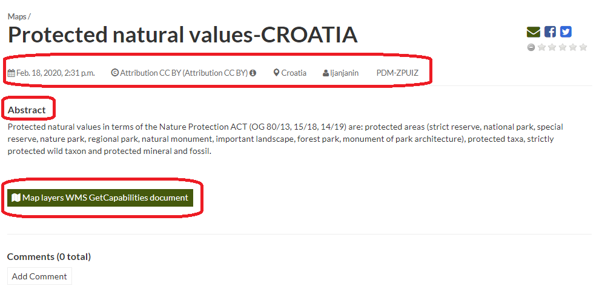
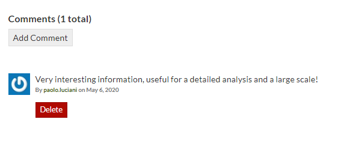

Map Information¶
Link for the Explore Maps page
The Map Information page
The Map Page is divided into three main sections:
- the Map Preview section, under the title
- the Tabs section, under the layer preview
- the Tools section, on the right side of the page
Map Preview¶
The Map Preview shows the Map with very basic functionalities:
- the Base Map Switcher that allows you to change the base map (lower left corner);
- the Zoom in/out tool to enlarge and decrease the view, the Zoom to max extent tool for the zoom to fit the layers extents (lower right corner);
- the Query Objects tool to retrieve information about the map objects by clicking on the map (lower right corner);
- the Print tool to print the preview (upper right corner).
Map Preview
Information Sections¶
This section shows some basic information about the map and allows users to share, rate and comment the map with other users.
The basic information shows some metadata such as its Title, Publication Date, License, which Regions are involved, Owner and Group. The metadata also reports a descriptive Abstract of the map.
The
Map Layers WMS GetCapabilities documentlink is also provided, the response to a GetCapabilities request is an XML document that allows clients to retrieve service metadata from a server.Maps Info
The Share section provides the links for the map to share through social media or email.
You can Rate the map through the Rating system.
Map Sharing and Rating
At the bottom of the page there is the Comments section, users can post their comments. Click on Add Comment, to insert comment and click Submit Comment to post it.
Map Comments
Your comment will be added next to the last already existing comment. If you want to remove it click on the red Delete button.
Map Tools¶
- click the Download Map button, to download the map as image;
- click the Metadata Detail button to see the map metadata, see Maps Metadata;
- click the Editing Tools button to access to many editing tools. Those functionalities will be explained in the Exploring Maps section;
- click the View Map button to open the map, see the Exploring Maps section for more details;
- see the Map Layers section to konw which layers are used by the map (you can open the Layer Page by clicking on its name, available only for local layers);
- click the Create a Map button of the Copy this map section to duplicate the map;
- click the Publish Map WMS of the Map WMS section to publish local map layers as WMS layer group;
- see the About section to know the map Owner, the Contact user and the Metadata Author.